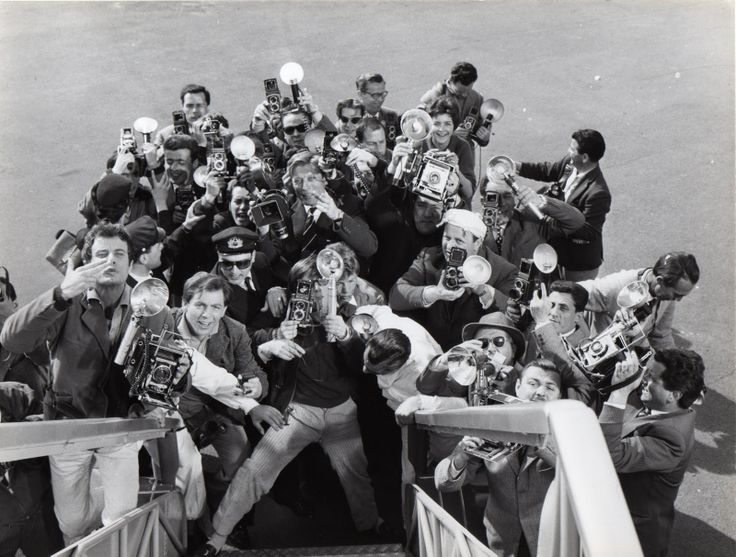

¿Estetización o blanqueamiento?

¿Es posible retratar la barbarie, la decadencia burguesa o la violencia social manteniendo la elegancia estética y formal del cine? ¿El cuidado fotográfico y la obsesión por la belleza artística banalizan el fondo de denuncia o reflexión de una obra?
Este tipo de preguntas siempre deben responderse marcando como referente total a Pier Paolo Pasolini. Con el maestro italiano podemos ponerle cara y ojos a esta dualidad, al haber pasado la mayor parte de su carrera moviéndose entre los dos extremos: sus críticas al consumismo neocapitalista o la mercantilización del cuerpo humano eran feroces, duras y algo sádicas, pero nunca dejando de lado la estética cinematográfica. Pasolini demostraba que embellecer la imagen y apartarla de la literalidad era una manera de darle valor a su trasfondo, alejándola del naturalismo pornográfico y el sensacionalismo morboso, pero también abriéndole la puerta al público más aprensivo.
Pero, ¿no puede conducir esto a obras superficiales, que busquen enfocar desde el rechazo pero acaben en el blanqueamiento? Yo creo que todo reside en la habilidad del artista. Puede que este tipo de cine acabe funcionando como una especie de caballo de Troya en el que se seduzca la mirada del espectador con un falso fin de entretenerlo y acabe conociendo una realidad a la cual, si no se la hubieran dado de esa forma, nunca habría querido entrar. En Youth (2015), se retratan los últimos días de dos personas mayores, solitarias, apáticas y algo salidas en una aguda representación del paso del tiempo y la vejez, a la que, tal vez, no entraríamos sin su finura formal y ese bello filtro sorrentiniano.
Siento que es imprescindible que el artista tome una posición política y social como una barrera hacia el egoísmo capitalista y la cultura del entretenimiento vacío, mostrando al espectador realidades diferentes a la suya y haciéndole reflexionar sobre ellas, pero es importante que ofrezca la finura suficiente como para evitar el panfleto. Lo literal es cutre e intelectualmente cómodo, y la ambigüedad muy poderosa: su capacidad de generar grietas entre fondo y forma puede conseguir que el gran público reflexione sobre ellas sin sentirse forzado a hacerlo.
Pero cuando una película no tiene esta finura, cuando, pese a tener una crítica de fondo, es excesivamente bondadosa con sus protagonistas o flamboyante en su imagen, puede quedarse en lo superficial. Por ejemplo, no siento que la crítica a la decadencia tardoburguesa que se hace en La Gran Belleza (2013) pueda compararse a la del supuesto sueño americano en El Gran Gatsby, del mismo año. Baz Luhrmann seduce en exceso al espectador y, aunque su crítica al sistema que lo sostiene es muy evidente, puede verse opacada por todos esos juegos de luces, colores y lujo, y quedarse en la fascinación superficial; mientras que Sorrentino, o Fellini en La Dolce Vita (1960) —vemos que el cine italiano es una gran muestra de esto—, se niegan a mostrar Roma con fealdad, pero siempre existe un gran “pero” en el contrapunto de la actitud de sus personajes, que evidencian que la belleza nunca es suficiente como para esconder su decadencia.